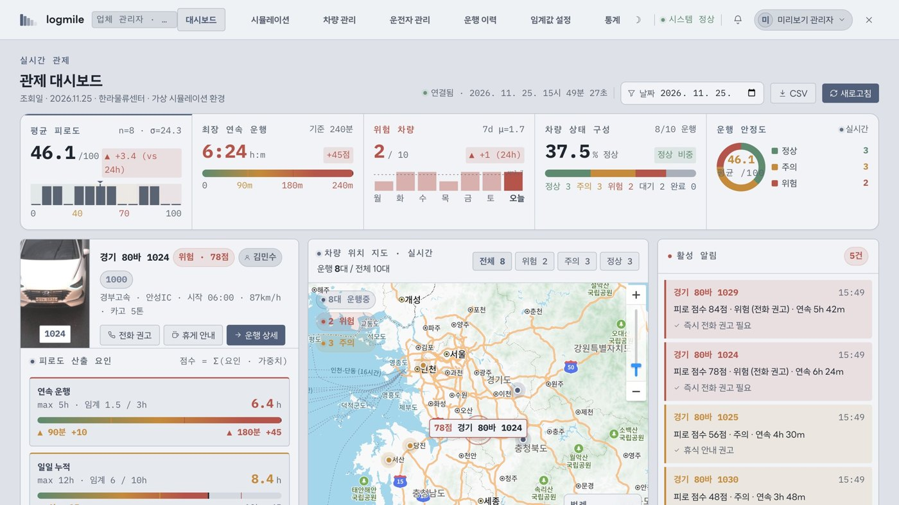
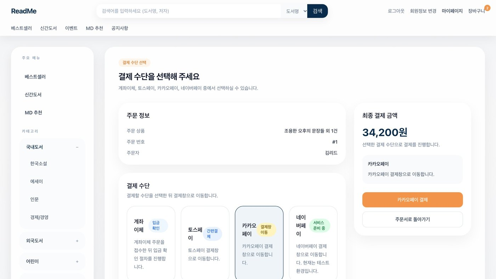
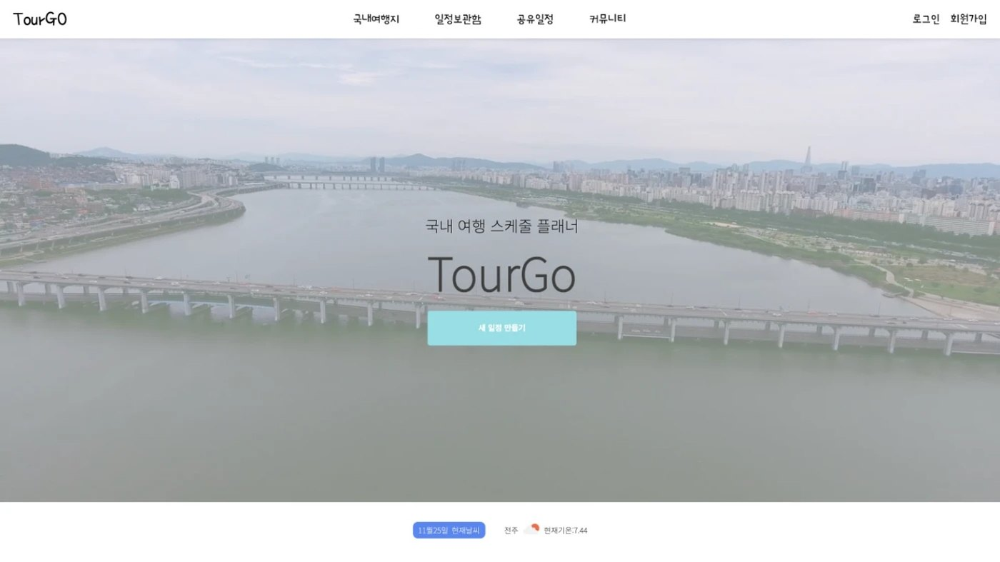
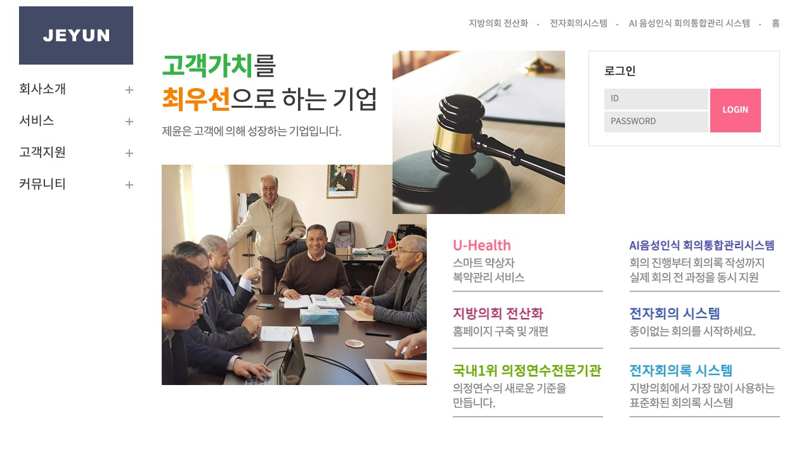
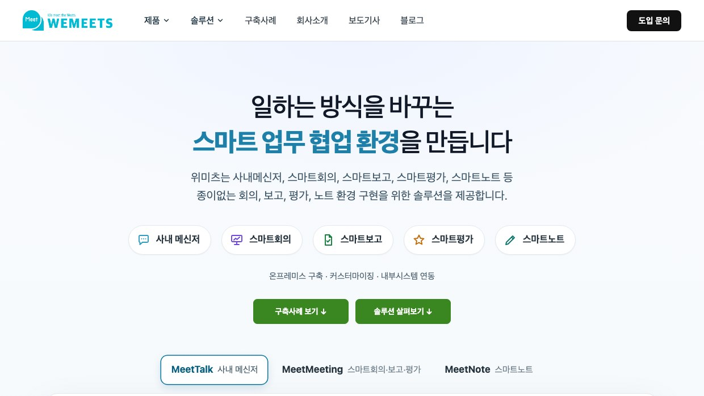

배포 이후까지 생각하는
풀스택 웹 개발자입니다
서버를 1년간 운영하며 장애와 배포를 겪었고, 그 경험으로 실패해도 데이터가 바르게 남는 API를 만듭니다. 기능을 만들 때 상태값과 실패 경로를 먼저 정리하고, 배포 이후의 동작까지 확인합니다.
- STEP 1, 6개월MES 현업, (주)화성
관리팀 사원. MES 제조실행시스템 운영 및 데이터 관리
- STEP 2, 3개월웹 개발, 위미츠
웹개발 사원. 수습(OJT) 3개월간 사내 솔루션 교육 및 테스트 서버 구축·분석
- STEP 3, 1년서버 운영, (주)제윤
기술지원 사원. 지방의회 40여 곳 홈페이지·회의록 서버 운영, 보안 조치, 소스 배포
개발자가 된 계기
소규모 공장의 유일한 사무직원으로 MES 도입을 맡아, 수기 기록과 시스템 집계 사이의 오차를 찾아 개발자에게 전달하며 현장과 개발 사이를 이었습니다. 그러다 열어본 개발자 도구에서 대학 시절 배운 코드가 떠올랐고, 문제를 전달하는 사람이 아니라 직접 해결하는 사람이 되고 싶어졌습니다.
사용자가 원하는 것을 직접 만들 수 있다는 매력, 그것이 제가 개발자가 된 이유입니다.
경험마다 얻은 강점
- MES 현업에서사용자 입장에서 시스템을 보는 눈
공장 관리팀에서 MES를 운영하고 데이터를 관리하며, 실제 사용자가 겪는 불편을 직접 경험했습니다.
- 개발 교육에서서버부터 화면까지 끝까지 구현
개발 교육 과정에서 팀장을 맡은 프로젝트를 포함해, 서버부터 화면까지 풀스택 프로젝트를 진행했습니다.
- 서버 운영에서배포 이후까지 생각하는 운영 감각
Linux/CentOS 웹 서버를 1년간 배포·모니터링하고 장애 원인 분석과 복구에 대응했습니다.
- 기능 구조화
요구사항을 화면, API, 데이터 단위로 나눠 구현 범위를 정리합니다.
- 구현과 협업
GitHub, Notion, Postman을 활용해 작업 내용과 API 흐름을 공유합니다.
- 검증과 정리
빌드, 화면 확인, 문서화를 통해 결과물을 다시 확인합니다.
기술 스택 굵은 글씨가 주요 사용 기술
- 언어
- Java, JavaScript, SQL, Shell Script
- 백엔드
- Spring Boot 3, JPA, MyBatis, Spring Security, JWT, FastAPI
- 프론트엔드
- HTML5, CSS3, Vue 3, Vite, Pinia, Thymeleaf
- 데이터베이스
- PostgreSQL, MySQL, Oracle DB, MSSQL, MariaDB
- 서버·인프라
- Linux, Apache Tomcat, Docker, Docker Compose, AWS, VMware
- 도구
- GitHub, IntelliJ IDEA, Maven, Notion, Figma, Postman
- AI 도구
- Codex, Claude, Antigravity
경력 총 1년 9개월
-
서버 운영 1년
(주)제윤
2023.10 – 2024.10기술지원 사원지방의회 40여 개 기관의 홈페이지·회의록 서버 운영과 유지보수
- 정기 점검, 장애 대응, 소스 배포
- 보안 취약점 조치, SSL 10여 개 기관
- 홈페이지 개편 서버 이관
-
웹 개발 3개월
주식회사 위미츠
2022.01 – 2022.04웹개발 사원, 수습 OJT테스트 서버로 전자회의·메신저 솔루션을 설치하고 분석
- Linux·Windows 가상환경 구성
- 코드·포트·DB 테이블 분석
- 테스트 환경 로그인 오류 해결
-
MES 현업 6개월
(주)화성
2020.12 – 2021.06관리팀 사원유일한 사무직원으로 MES 도입 실무와 데이터 관리
- 수기·자동 집계 비교 검증
- 센서 오차·오작동 사례 정리
- 현장과 개발자 사이 소통
학력·교육·학습 기록
학력
- 2026.09 – 재학 중고려사이버대학교 소프트웨어학부
3학년 편입, 2028.08 졸업 예정
- 2024.03 – 2026.08한국방송통신대학교 컴퓨터공학과
편입, 고려사이버대학교 편입으로 이동
- 2012.03 – 2014.02구미대학교 컴퓨터정보전자과 디지털전자전공
졸업
교육
- 2025.12 – 2026.07스마트 모빌리티 DX Academy
MBC 아카데미 컴퓨터 교육센터. 웹설계 기초, AI 프로그래밍, Vue, UI/UX 설계 및 제작
- 2022.06 – 2023.02Java 웹 앱 개발 통합 과정
코리아 IT 아카데미. Java, Spring Boot, JPA, React.js 등 풀스택 개발
- 2021.06 – 2021.11자바 빅데이터 풀스택 과정
인천직업능력교육원. Java 웹 개발, 빅데이터 처리, DB 연동
프로젝트·실무
대표 프로젝트
-

LogMile
2026.04 – 2026.06, 5주
2인 팀, 기획·프론트엔드·데이터 설계화물차 운전자의 피로도를 점수화해 사고 전에 알리는 관제 서비스
- 실제 단말기 없이 GPS 시뮬레이터로 전체 흐름 검증
- 운행·휴식·야간 데이터로 3단계 위험 등급 설계
- AI가 만든 코드를 기준 문서와 대조해 검증
Python, PostgreSQL, Vue 3, Chart.js, Docker자세히 보기
-

ReadMe
2026.03 – 2026.04, 5주
팀장, 백엔드장바구니에서 배송까지 이어지는 도서 쇼핑몰의 주문·결제 백엔드
- 카카오페이 구버전 API를 신버전으로 전환
- 결제 중단 시 주문·장바구니 데이터 보존과 자동 취소
- 결제사 3곳을 PaymentGateway 인터페이스로 분리
Java 21, Spring Boot 3, JPA, PostgreSQL, Vue자세히 보기
-

ProjectA
2022.11 – 2023.03, 약 4개월
팀장, 국내여행지공공데이터 API로 관광지를 보여주는 풀스택 문화관광 플랫폼
- 새로고침 없이 목록만 바꾸는 Thymeleaf fragment 전환
- QueryDSL과 Pageable로 지역 필터·페이징
- 팀원 이탈 후 파트를 다시 나눠 완성
Java 17, Spring Boot, JPA, QueryDSL, MySQL자세히 보기
그 외 프로젝트
Web Resume Portfolio
React 기반 인터랙티브 웹 이력서
React, Vite / 2026.06, 3주
GitHubJeju Culture & Tourism
제주 문화관광 소개, Thymeleaf 전환
HTML5, CSS3, JavaScript, Thymeleaf / 2026.02, 4주
데모GitHubShop_Portfolio
국비 과정 첫 프로젝트, Java Web Servlet 쇼핑몰
Java, Web Servlet, CSS3 / 2021.12 – 2022.01
GitHub
실무
-

화면 출처: 제윤 홈페이지 Assembly Maintenance
2023.10 – 2024.10, 1년
실무, 서버 운영지방의회 40여 곳 홈페이지·전자회의록 운영, 보안, 유지보수
- 회의록 업로드 에러를 웹방화벽 차단 로그로 추적해 해결
- Tomcat 업그레이드와 노출 정보·취약 포트 조치
- 홈페이지 개편 서버 이관, 3개 의회 정상 오픈
Linux, Windows Server, Tomcat, Apache, Wowza, SSL자세히 보기
-

화면 출처: 위미츠 홈페이지 사내 솔루션 테스트 환경 구축·분석
2022.01 – 2022.04, 3개월
실무, 수습 OJT전자회의·메신저 솔루션을 테스트 서버에 설치하고 구조를 분석
- Linux·Windows 가상환경 구성과 솔루션 설치
- 서버·웹·DB 코드, 포트, 테이블 분석
- 상위 그룹 조회 쿼리를 고쳐 로그인 오류 해결
Java, MSSQL, MariaDB, CentOS 7, SVN자세히 보기